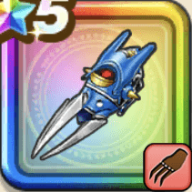

KM2式破壊機爪
攻略班 7.5点 / 裂鋼拳プラズマバスターメタルターミネイト凍結処分プログラム急速充填
くわしい特徴
【レベル別習得スキル】 Lv1【ゴドハン】攻撃力+5 Lv10裂鋼拳（消費MP：12）マシン系に威力180%、それ以外の系統には120%の斬撃攻撃を2回する Lv15プラズマバスター（消費MP：24）敵1体に威力300%のデイン属性体技ダメージを与え、たまに感電を与える Lv20メタルターミネイト（消費MP：30）敵1体にメタル系なら+21ダメージを3回与え、それ以外には170%の体技ダメージを3回与える Lv30凍結処分プログラム（消費MP：49）敵全体に400%のヒャド属性体技ダメージを与える。たまに「まっさつプログラム」が起動し、最大3段階の様々な効果の追撃ダメージを与える Lv35マシン系へのダメージ+5% Lv40悪魔系へのダメージ+5% Lv45攻撃力+12 Lv50急速充填（消費MP：4）戦闘開始時に自身とまれにランダムな仲間のMPを行動開始時に一定量回復させる効果を付与する(効果1ターン) 【限界突破スキル】 1凸スキルの斬撃・体技ダメージ+7% 2凸スキルの斬撃・体技ダメージ+7% 3凸スキルの斬撃・体技ダメージ+7% 4凸スキルの斬撃・体技ダメージ+7%